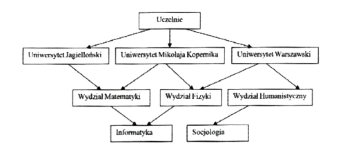
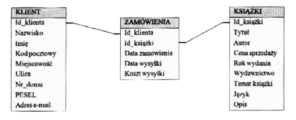

Tradycyjne dane przechowywane są w postaci dokumentów papierowych.
Dokumenty takie zawierają opisy przechowalnych obiektów. Obiektami mogą być np. samochody, książki czy osoby.
Opisywane są również związki zachodzące między obietkami:
- kto jest właścicielem samochodu
- kto wypożyczył książkę
- gdzie pracuje dana osoba...
Dokumenty opisujące obiekty i związki są gromadzone w postaci kartek i są przechowywane w teczkach czy segregatorach.
Dobrym rozwiązaniem problemu wolnego wyszukiwania jest przeniesienie takich dokumentów do komputera,
gdzie można obsługiwać tak utworzoną bazę za pomocą dostępnych narzędzi ułatwiających wyszukiwanie danych.
Zalety korzystania z komputerowych baz danych:
- Szybkie wyszukiwanie danych.
- Łatwe wykonywanie obliczeń
- Możliwość przechowywania dużej ilości danych na małej powierzchni
- Szybkie porządkowanie danych
Baza danych - to uporządkowany zbiór danych z określonej dziedziny tematycznej zorganizowany w sposób ułatwiający do nich dostęp.
System zarządzania bazą danych - to program zarządzający danymi w bazie umożliwiający ich przetwarzanie.
System bazy danych - to baza danych wraz z systemem zarządzania bazą danych
Aby przechowywać dane na komputerze konieczne jest określanie formy ich przechowywania. Na potrzeby baz danych zostały zdefiniowane klasyczne techniki organizowania informacji zwane modelami baz danych.
Model danych to abstrakcyjny opis sposobu przedstawiania i wykorzystania danych.
Na model danych składają się:
-struktura - opis sposobu przedstawiania obiektów (encji) modelowania wycinka świata oraz ich związków.
-ograniczenia - reguły kontrolujące spójność i poprawność danych.
-operacje - zbiór działań, które umożliwiają dostęp struktur.
Głównymi modelami baz danych są:
- Model hierarchiczny
- Model sieciowy
- Model obiektowy
- Model relacyjny
W modelu hierarchicznym przechowywane dane są zorganizowane w postaci odwróconego drzewa.
Każdy obiekt (z wyjątkiem obiektu podstawowego) jest połączony z jednym obiektem nadrzędnym.
Tak zbudowana baza danych umożliwia proste wyszukiwanie danych.
Rozpoczyna się ono od obiektu podstawowego i poprzez rozgałęzienia oraz kolejne obiekty dochodzi się do obiektu szukanego. Informacja jest zawarta w kolejnych dokumentach oraz w strukturze drzewa.
Hierarchiczna baza danych zakłada podstawowe warunki intergralności danych.
Dokument podrzędny może zostać utowrzony dopiero gdy zostanie powiązany z dokumentem nadrzędnym. Kiedy zostanie usunięty dokument nadrzędny, automatycznie zostaną usunięte wszystkie dokumenty podrzędne
W modelu sieciowym połączenia między dokumentami tworzą sieć.
Jest to zmodyfikowana wersja modelu hierarchicznego,
w której dozwolone są połączenia na tym samym poziomie drzewa danych.
Informacja jest zawarta w dokumentach oraz w przebiegu połączeń sieci.
Model obiektowy łączy cechy programów komputerowych tworzonych w językach programowania obiektowego z cechami aplikacji bazodanowych.
Dane są udostepnione w postaci obietków. Ich stan i zachowanie są opisywanie za pomocą narzędzi dostępnych w programowaniu obiektowym (własności,metody,klasy).
Do przechowywania danych stosowane są obiekty.
Model relacyjny baz danych został oparty na matematycznym modelu organizacji i pojęciu relacji.
W tym modelu, dane są przedstawione w postaci relacji reprezentowanych przez tabele.
Relacje (tabele) składają się z rekordów (wierszy) o takiej samej strukturze.
Tworzą one między sobą powiązania zwane relacjami.
Ze względu na funkcjonalność, model ten najczęściej wykorzystywany przy projektowaniu baz danych.
